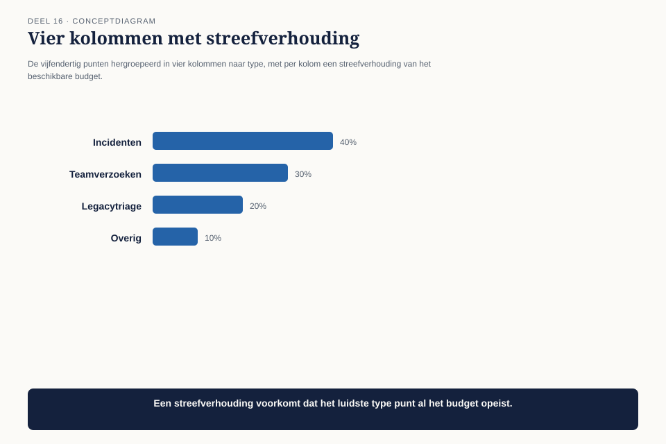
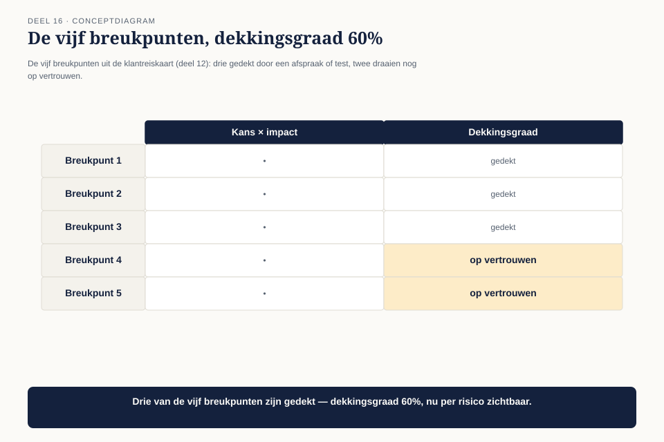

Deel 16 — Value model II
Slidedeck · Ductus-cursus BTABoK · Niveau 2 · deel 16 van 30 · 30 slides
Slide 1 — Titel: Value model II
Deel 16
Ductus
Slide 2 — Agenda: Vandaag
- De portefeuillevraag
- Technische schuld als financieel begrip
- Investeringsplanning op portefeuilleniveau
- Structurele complexiteit
- De architectuur-dekkingsgraad
- Risicomethoden
Slide 3 — Sectie: 1. De portefeuillevraag
Slide 4 — Citaat: Vijfendertig punten op de lijst. Waar geven we volgend kwartaal ons geld aan uit
Vijfendertig punten op de lijst. Waar geven we volgend kwartaal ons geld aan uit?
— Bart Hoekstra
Slide 5 — Figuur: De lijst

Slide 6 — Statement: Deel 15: wat is bewezen
Dit deel: hoe kies je uit wat nog moet
Slide 7 — Sectie: 2. Technische schuld als lening
Slide 8 — Figuur: Hoofdsom, rente, aflossing

Slide 9 — Tabel: Bij het koppelvlak
| Hoofdsom | kosten van een tussenlaag destijds |
|---|---|
| Rente | 18.000-45.000/jaar herstelwerk |
| Aflossing | de uiteindelijke reparatie |
Slide 10 — Statement: Niet alle schuld is slecht
Het probleem: niemand weet dat de lening bestaat
Slide 11 — Opdracht: Opdracht 1 — De schuldmetafoor toepassen
15 minuten, individueel
Eigen voorbeeld · hoofdsom, rente, aflossing
Slide 12 — Sectie: 3. Investeringsplanning
Slide 13 — Figuur: Vier typen, vijfendertig punten

Slide 14 — Tabel: Bij Mutatieplatform
| Type | Aantal |
|---|---|
| Renderend | 22 |
| Beschermend | 8 |
| Verplicht | 3 |
| Optiescheppend | 2 |
Slide 15 — Statement: Zonder indeling gaat het budget naar renderend
De drie verplichte punten blijven buiten beeld
Slide 16 — Opdracht: Opdracht 2 — De investeringsportefeuille
25 minuten, tweetallen
Tien punten indelen · welk type is ondervertegenwoordigd?
Slide 17 — Sectie: 4. Structurele complexiteit
Slide 18 — Figuur: Groot maar eenvoudig, klein maar verbonden

Slide 19 — Statement: Als je één ding wijzigt
Hoeveel andere dingen moet je meenemen?
Slide 20 — Opdracht: Opdracht 3 — Structurele complexiteit
15 minuten, individueel
Twee eigen systemen · klopt je intuïtie?
Slide 21 — Sectie: 5. De architectuur-dekkingsgraad
Slide 22 — Figuur: De pensioenanalogie

Slide 23 — Tabel: Twee dekkingsgraden
| Pensioen | Architectuur |
|---|---|
| Bezit ÷ verplichtingen | Gedekt risico ÷ totaal risico |
| Onder 100%: tekort | Onder streefwaarde: risico op vertrouwen |
Slide 24 — Statement: Bij Mutatieplatform: 60%
3 van de 5 breukpunten gedekt, 2 draaien op vertrouwen
Slide 25 — Opdracht: Opdracht 4 — Je eigen dekkingsgraad
20 minuten, individueel
Eigen risicogebied · gedekt vs. op vertrouwen
Slide 26 — Sectie: 6. Risicomethoden
Slide 27 — Figuur: Het risicoregister

Slide 28 — Bullets: Het antwoord aan Bart
- Vier categorieën, niet 35 losse punten
- “Nu kan ik hier iets mee”
- Niet omdat het minder is — omdat het zijn eigen taal spreekt
Slide 29 — Bullets: Wat dit deel heeft opgeleverd
- Technische schuld: een lening, geen morele categorie
- De investeringsportefeuille voorkomt verdringing door het makkelijkste type
- De architectuur-dekkingsgraad maakt risico net zo serieus als financiën
Slide 30 — Titel: Volgende keer
Deel 17 — Operating model I
Besluiten, ontwerp en stakeholders als doorlopend ritme.